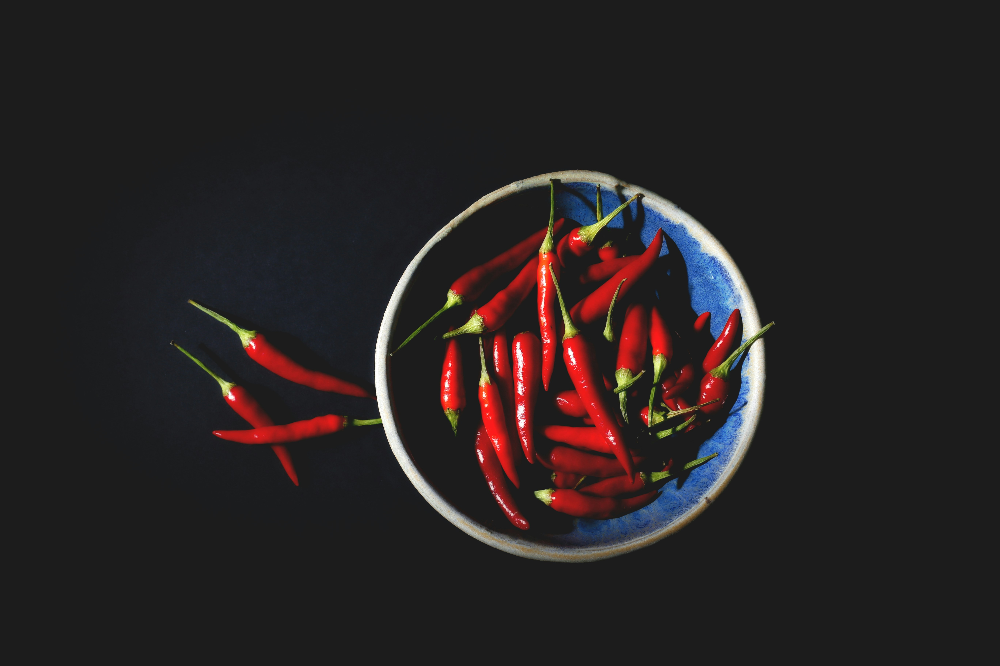

Superhot Hot Spicy Sauce

A bowl of chillis Credits:Thomas Evans, Unsplash
Ingredients
- Superhot Chilli Peppers
- Garlic
- Basil Leaves
- Vinegar
- salat
How to do it
- Roast the peppers. Heat an oven to 400°F. Set the superhot chili peppers and garlic on a baking sheet and bake them about 15-20 minutes, or until the skins slightly char. Keep an eye on these. You don't want them to burn, and watch out for any fumes.
- Process the ingredients. Add peppers to a food processor. Squeeze garlic out of their skins and into the food processor they go. Add basil leaves and process.
- Vinegar. While processing, add in vinegar until it is nicely pureed. Watch out for the fumes!
- Salt and strain, if desired. Add salt and stir. Push the sauce through a strainer or use a food mill to really strain it, if desired. Adjust with more vinegar or water to your desired consistency.
- Bottle it up. Pour into bottles and enjoy. Give to your friends! The longer you let it sit, the more the flavors will meld.
Home